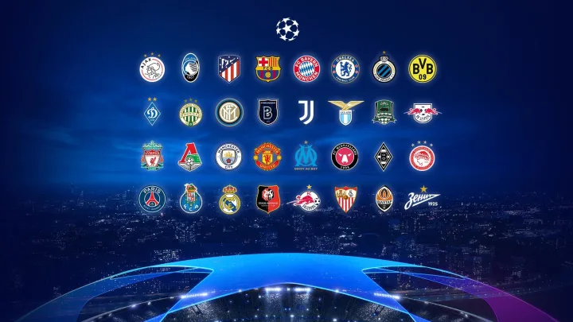
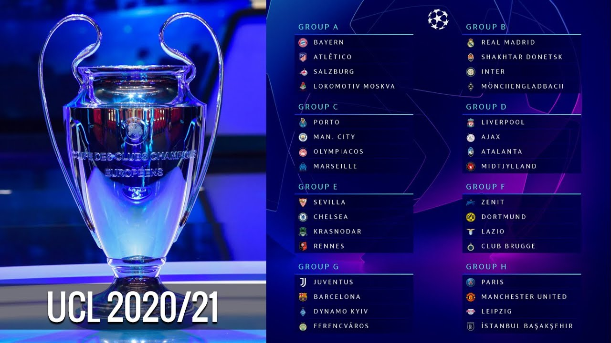

In football there are many tournaments, but there are some tournaments that are bigger than the other tournaments. That is because in those tournaments you can compete with teams or nations from around the world.
Champions League is one of the biggest tournaments in football. There are 32 to teams who qualifies and playes in the Champions League. Usually it is the top four teams from the four biggest leagues who qualifies to the Champions League. Then it can be between 1-2 teams from the other European leagues that qualifies to the Champions League.
 Here you can see two pictures from this seasons Champions League (2020/2021). This is a example of how it looks like every season in the Champions League. In the picture on the left you can see the 32 teams that took part of this seasons Champions League. In the picture on the right you can see that the teams have been drawn in eight different groups with four teams in each group. The group stage two teams from each group qualifies to the next round, which is the round of 16. After the round of 16 it is the quarterfinals, with eight teams left. Then it is the semifinal with only four teams left. In the end two teams meet in the Champions League final.